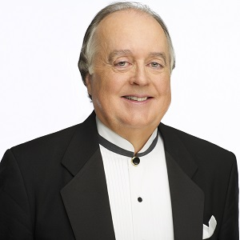

<article id="post-148" class="post-148 page type-page status-publish" itemtype='http://schema.org/CreativeWork' itemscope='itemscope'>
	<div class="inside-article">

					<header class="entry-header">
				<h1 class="entry-title" itemprop="headline">Artistic Staff</h1>			</header><!-- .entry-header -->

				<div class="entry-content" itemprop="text">
			<div id="pl-148"  class="panel-layout" ><div id="pg-148-0"  class="panel-grid panel-no-style" ><div id="pgc-148-0-0"  class="panel-grid-cell" ><div id="panel-148-0-0-0" class="so-panel widget widget_sow-editor panel-first-child panel-last-child" data-index="0" ><div class="so-widget-sow-editor so-widget-sow-editor-base">
<div class="siteorigin-widget-tinymce textwidget">
	<p><span class="style15"><strong>Artistic Director &amp; Conductor</strong></span></p>
<p><a href="../wp-content/uploads/2017/01/Abels-DanceMartinsDream-SC-headshot-300dpi-color.jpg"></a></p>
<p><strong>Stephen Culbertson</strong> brings over 40 years of experience to the Ridgewood Symphony, having conducted orchestras, opera productions, and ballet companies - ranging from major to community level - in Europe and the United States since 1977. In addition to his new post in Ridgewood, he is in his 9th season as the Music Director and Conductor of the Society of Musical Arts (SOMA) in Maplewood, NJ, where he has grown the orchestra and audience to the point where they have outgrown three venues and are moving to a fourth for the 2018-19 season. Culbertson's recent activities include conducting productions of <em>Le Nozze di Figaro </em>and <em>Candide </em>with the State Repertory Opera of New Jersey and various stints as interim Music/choir director at the Presbyterian Church of Upper Montclair. </p>
<p>Major engagements include a Spoleto USA debut on the 20th-Century Perspective Series and a new production of Prokofiev's <i>Cinderella</i> for the San Joaquin Ballet in California. In past seasons, Culbertson has appeared regularly with the Montclair Chamber Orchestra and Orchestra Society of Philadelphia. He has served as Music Director of the Sussex County (New Jersey) Community Orchestra and Associate Conductor of the Bergen (New Jersey) Philharmonic Orchestra. With the latter two orchestras, he conceived and conducted a series of family concerts for the local community to great acclaim. He served on the board of Unity Concerts of NJ and was its Artistic Director for the 2002-3 season. </p>
<p>After graduating from University of the Pacific in his native California, Culbertson was awarded a scholarship to study at the Sibelius Academy in Helsinki (Finland) with famed conducting teacher Jorma Panula. During his five-year stay, he studied the works of Sibelius with the composer's son-in-law, Jussi Jalas, and conducted most of Finland's major ensembles: The Finnish National Opera, the Helsinki Philharmonic, The Finnish Radio Orchestra, The Vaasa and Tampere Operas, and the Oulu Philharmonic. In addition to conducting, he gained valuable experience (not to mention much-needed income) by singing in a number of professional choruses, including the Finnish Radio Choir, Savonlinna Opera Chorus and the Helsinki Festival production of Britten's Church Parables.</p>
<p>Culbertson introduced local Finnish audiences to works by Copland, S.R. Beckler, John Forsman and many others. He introduced local listeners to American music by writing a six-hour series of radio programs entitled "A History of American Music" for the Finnish Broadcast Corporation. As a guest conductor, Culbertson has worked for the Netherlands Opera and appeared in Czechoslovakia (with the Kosice State Philharmonic), Italy, Hungary, and England.</p>
<p>Culbertson has been a strong advocate of American music as both a conductor and a publisher. In 1993, he co-founded Subito Music Publishing and became its President in 1997. From 1987 to 1992, he was director of the rental and publications departments for G. Schirmer, Inc., where he supervised the music preparation of, among others, John Corigliano's opera <i>The Ghosts of Versailles</i> (for the Metropolitan Opera) and <i>Symphony No. 1</i> (for the Chicago Symphony). He serves on the board of the Music Publishers Association of the US and the Symphony and Concert Committee of the American Society of Composers, Authors and Publishers (ASCAP).</p>
<p> </p>
<p><strong><span class="style17">Artistic Advisor &amp; Assistant Conducto</span><span class="style18">r</span></strong></p>
<p><a href="../wp-content/uploads/2017/07/EdModeracki.jpg"></a></p>
<p><strong>Edmund A. Moderacki</strong> serves as Artistic Advisor and Assistant Conductor of the Ridgewood Symphony Orchestra. Mr. Moderacki graduated with honors from Montclair State College. He holds a MA from Hunter College (CUNY) and has done additional studies at Seton Hall University, Newark State College and the Center for Understanding Media. He is currently a music teacher in the River Vale (NJ) Schools, and has been conductor of the Waldwick Concert Band since 1978. Active in education and the arts, Mr. Moderacki is president-elect of the Music Educators of Bergen County, Inc., serves as a member of the Steering Committee of Bergen County Teen Arts and sits on the boards of several arts and education organizations. He was also the conductor of the 2001 All Bergen County High School Band and RSO Project Symphony 2003 at River Vale, Riverdale, and Wayne.</p>
<p> </p>
<p> </p>
</div>
</div></div></div></div></div>					</div><!-- .entry-content -->
			</div><!-- .inside-article -->
</article><!-- #post-## -->
